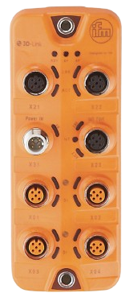

IO-Link Master
IFM IO-Link Master - Port status, supervision, and software versions
Connection:
Checking...
Data Source:
-
Last Update:
-
Poll Interval:
5s
IO-Link Master address
Port
Port Status
IO-Link ports and connected devices
| Port | Mode | Comm. Mode | MasterCycle | Vendor ID | Device ID | Name | Serial | PD In | PD Out |
|---|---|---|---|---|---|---|---|---|---|
| Loading... | |||||||||
Supervision Trends
Current, Voltage, Temperature over time
Current (mA)
Voltage (mV)
Temperature (°C)
Supervision
Device operational parameters
| - |
Software Versions
Firmware and component versions
| - |
Simulate Fault (Training)
See how the dashboard reacts to a fault without touching hardware
Port:
Fault:
Active Port Details
Process data and decoded device status
Loading...